Visualize priors
Load packages
Chapter 10, Statistical rethinking
One strategy for choosing an outcome distribution is to plot the histogram of the outcome variable and, by gazing into its soul, decide what sort of distribution function to use. Call this strategy Histomancy, the ancient art of divining likelihood functions from empirical histograms. This sorcery is used, for example, when testing for normality before deciding whether or not to use a non-parametric procedure. Histomancy is a false god. (p. 314, emphasis in the original)
Luckily, it’s easy to do better. By using all of our prior knowledge about the outcome variable, usually in the form of constraints on the possible values it can take, we can appeal to maximum entropy for the choice of distribution. Then all we have to do is generalize the linear regression strategy–replace a parameter describing the shape of the likelihood with a linear model–to probability distributions other than the Gaussian. (p. 313)
Rethinking: A likelihood is a prior.
In traditional statistics, likelihood functions are “objective” and prior distributions “subjective.” In Bayesian statistics, likelihoods are deeply related to prior probability distributions: They are priors for the data, conditional on the parameters. And just like with other priors, there is no correct likelihood. But there are better and worse likelihoods, depending upon the context. (McElreath, R. 2020, Statistical Rethinking, p. 316).
Play with distributions
Gamma & Exponential
Code
length_out <- 100
tibble(x = seq(from = 0, to = 5, length.out = length_out)) %>%
mutate(Gamma = dgamma(x, 2, 2),
Exponential = dexp(x)) %>%
pivot_longer(-x, values_to = "density") %>%
mutate(label = ifelse(name == "Gamma", "y %~% Gamma(lambda, kappa)", "y %~% Exponential(lambda)")) %>%
ggplot(aes(x = x, y = density)) +
geom_area(fill = "grey") +
#scale_x_continuous(NULL, breaks = NULL) +
scale_y_continuous(NULL, breaks = NULL) +
coord_cartesian(xlim = c(0, 4)) +
theme_bw() +
facet_wrap(~ label, scales = "free_y", labeller = label_parsed)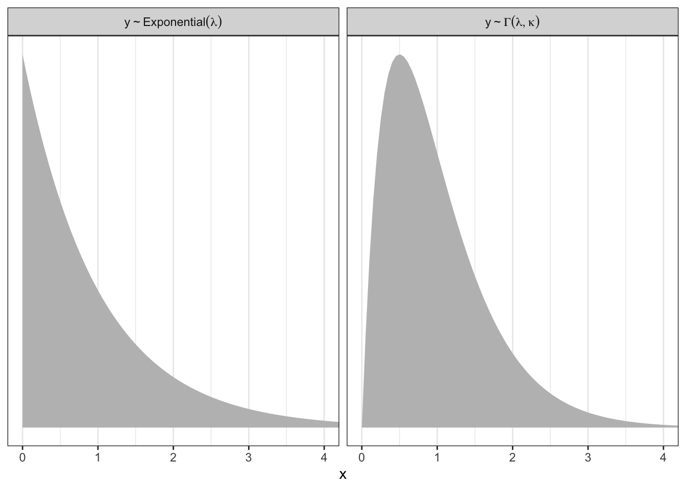
Poisson
Code
tibble(x = 0:20) %>%
mutate(density = dpois(x, lambda = 2.5),
strip = "y %~% Poisson(lambda)") %>%
ggplot(aes(x = x, y = density)) +
geom_col(fill = "grey", width = 1/2) +
scale_x_continuous(NULL, breaks = NULL) +
scale_y_continuous(NULL, breaks = NULL) +
coord_cartesian(xlim = c(0, 10)) +
theme_bw() +
facet_wrap(~ strip, labeller = label_parsed)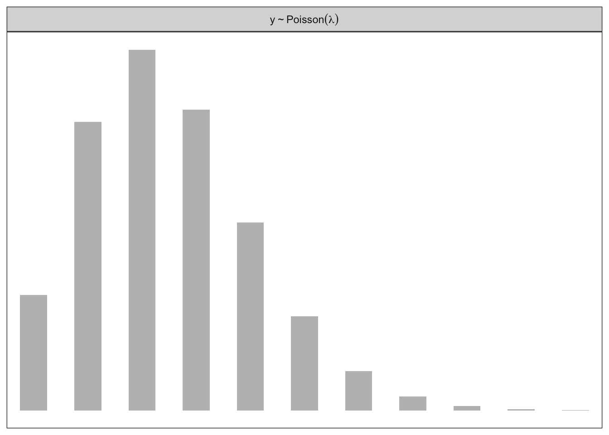
Binomial
Code
tibble(x = 0:10) %>%
mutate(density = dbinom(x, size = 10, prob = .85),
strip = "y %~% Binomial(n, p)") %>%
ggplot(aes(x = x, y = density)) +
geom_col(fill = "grey", width = 1/2) +
scale_x_continuous(NULL, breaks = NULL) +
scale_y_continuous(NULL, breaks = NULL) +
coord_cartesian(xlim = c(0, 10)) +
theme_bw() +
facet_wrap(~ strip, labeller = label_parsed)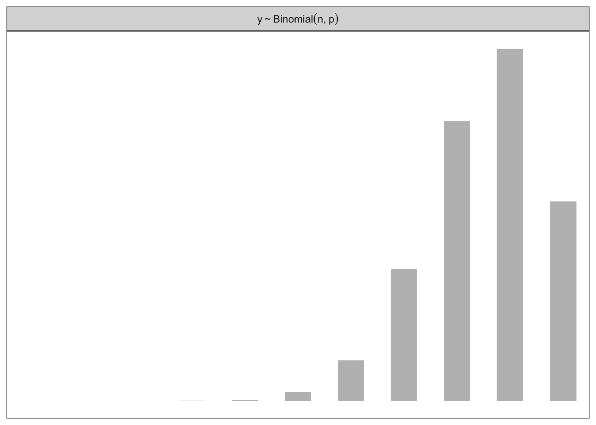
Slopes & Intercepts
Gaussian
Code
n1 <- prior(normal(0, 1), class = sd) %>%
parse_dist()
(pn1 <- ggplot(n1, aes(y = 0, dist = .dist, args = .args)) +
stat_halfeye(point_interval = mean_qi, .width = .95,
p_limits = c(.0001, .9999)) +
scale_y_continuous(NULL, breaks = NULL) +
scale_x_continuous(breaks = seq(from = -2, to = 2, by = 0.25), limits = c(-2,2))+
theme_bw(base_size = 16)+
labs(title = "Weakly informative prior: Normal(0, 0.25)",
subtitle = "The point and horizontal line mark the mean and 95% interval.",
x = expression(italic(p)(beta))))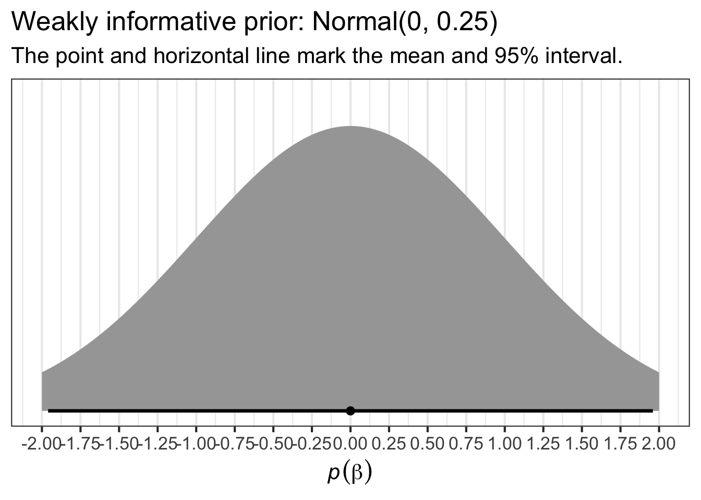
Code
n2 <- prior(normal(-0.05, 0.075), class = sd) %>%
parse_dist()
(pn2 <- ggplot(n2, aes(y = 0, dist = .dist, args = .args)) +
stat_halfeye(point_interval = mean_qi, .width = .95,
p_limits = c(.0001, .9999)) +
scale_y_continuous(NULL, breaks = NULL) +
scale_x_continuous(breaks = seq(from = -2, to = 2, by = 0.25), limits = c(-2,2))+
theme_bw(base_size = 16)+
labs(title = "Dis-informative prior: Normal(0, 0.5)",
subtitle = "The point and horizontal line mark the mean and 95% interval.",
x = expression(italic(p)(beta)))
)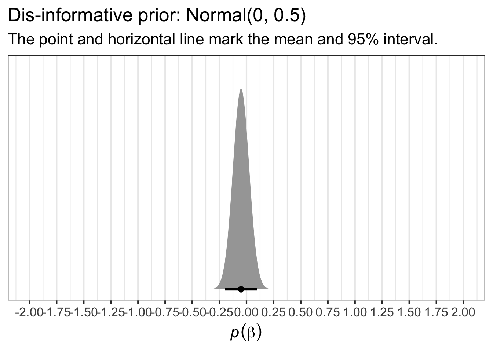
Code
n3 <- prior(normal(0.1, 0.05), class = sd) %>%
parse_dist()
(pn3 <- ggplot(n3, aes(y = 0, dist = .dist, args = .args)) +
stat_halfeye(point_interval = mean_qi, .width = .95,
p_limits = c(.0001, .9999)) +
scale_y_continuous(NULL, breaks = NULL) +
scale_x_continuous(breaks = seq(from = -2, to = 2, by = 0.25), limits = c(-2,2))+
theme_bw(base_size = 16)+
labs(title = "Specific informative prior: Normal(0.1, 0.05)",
subtitle = "The point and horizontal line mark the mean and 95% interval.",
x = expression(italic(p)(beta)))
)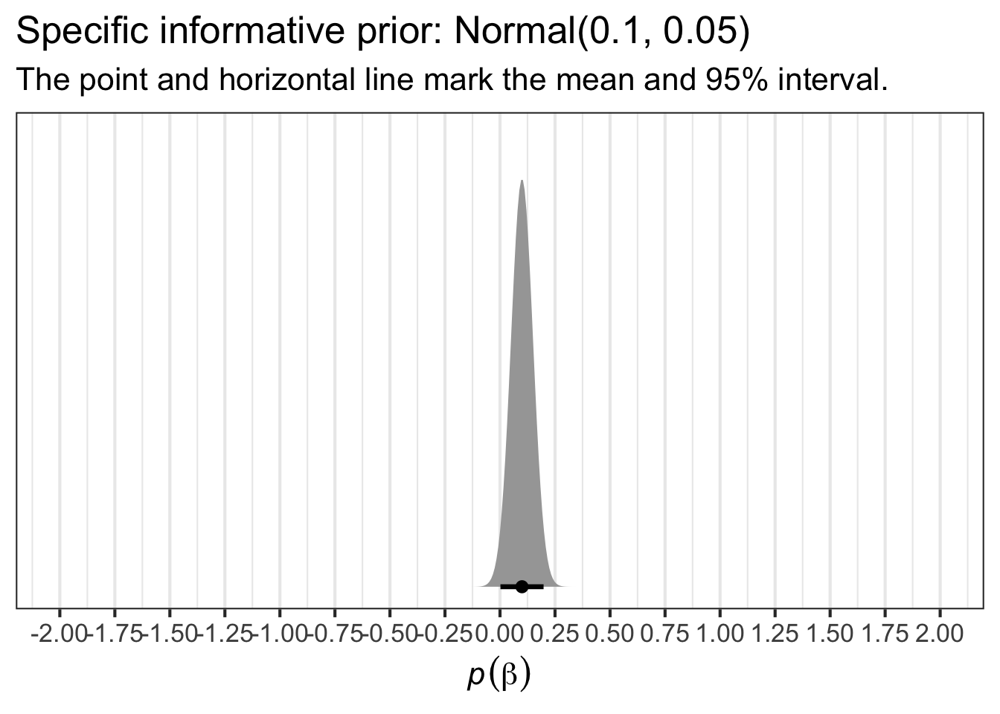
Code
ggpubr::ggarrange(pn1 , pn2, pn3 , nrow = 3)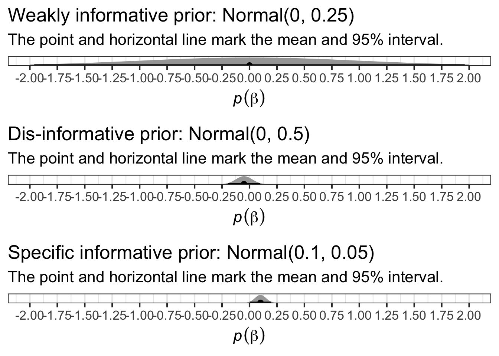
Sigma
Sigma is the estimated standard deviation of the errors or, in other words, the standard deviation of the residuals of the model. In the simple case of an intercept-only model, this is identical to the standard deviation of the outcome.
Exponential
The exponential distribution has a single parameter, \(λ\), which is the reciprocal of the mean.
Code
p0 <- prior(exponential(0.1)) %>%
ggdist::parse_dist() %>%
ggplot(aes(y = 0, dist = .dist, args = .args)) +
ggdist::stat_halfeye(point_interval = mean_qi, .width = c(.5, .95),
fill = "grey") +
scale_y_continuous(NULL, breaks = NULL) +
labs(title = "Exponential(0.1)",
x = NULL)
p0_5 <- prior(exponential(0.5)) %>%
ggdist::parse_dist() %>%
ggplot(aes(y = 0, dist = .dist, args = .args)) +
ggdist::stat_halfeye(point_interval = mean_qi, .width = c(.5, .95),
fill = "grey") +
scale_y_continuous(NULL, breaks = NULL) +
labs(title = "Exponential(0.5)",
x = NULL)
p1 <- prior(exponential(1)) %>%
ggdist::parse_dist() %>%
ggplot(aes(y = 0, dist = .dist, args = .args)) +
ggdist::stat_halfeye(point_interval = mean_qi, .width = c(.5, .95),
fill = "grey") +
scale_y_continuous(NULL, breaks = NULL) +
labs(title = "Exponential(1)",
x = NULL)
p2 <- prior(exponential(3)) %>%
ggdist::parse_dist() %>%
ggplot(aes(y = 0, dist = .dist, args = .args)) +
ggdist::stat_halfeye(point_interval = mean_qi, .width = c(.5, .95),
fill = "grey") +
scale_y_continuous(NULL, breaks = NULL) +
labs(title = "Exponential(3)",
x = NULL)
p0 + p0_5 +
p1 + p2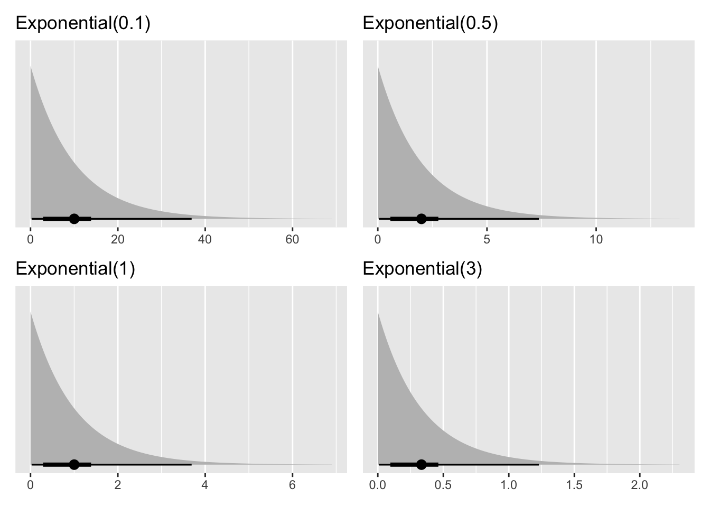
Half Cauchy
This distribution is helpful for estimating measures like standard deviations. It’s “half” because only the positive values are taken into consideration, since the standard deviation can only ever be positive.
This is how a Half Cauchy distribution with mean 0 and standard deviation 0.1 looks like cauchy(0,0.1):
Code
tibble(scale = c( 0.5, 1, 2.5, 5)) %>%
crossing(x = seq(0, 10, 0.1)) %>%
mutate(
prior = str_c("Half-Cauchy(0, ", scale, ")"),
dens = dcauchy(x, location = 0, scale = scale)
) %>%
ggplot(aes(x, y = dens)) +
geom_line(aes(color = prior), linewidth = 1) +
theme(legend.position.inside = c(0.1, 0.1), axis.ticks.y = element_blank(),axis.text.y = element_blank())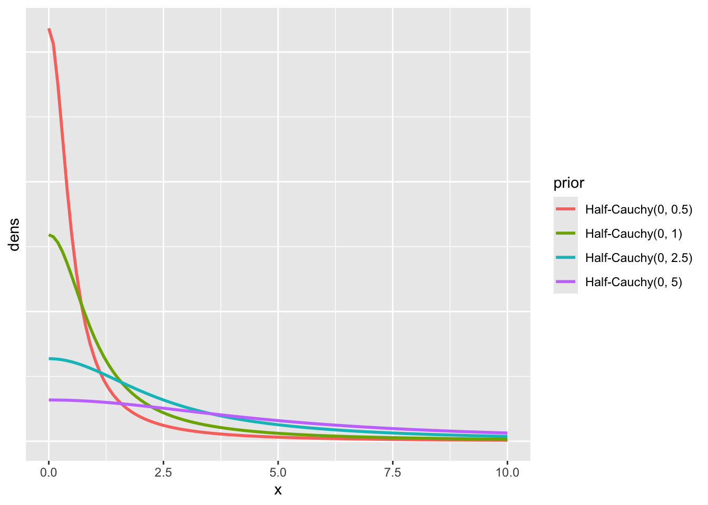
Gamma
Code
library(ggthemes)
# gamma distribution reparametrized by mean (mu) and scale, as in
# McElreath's `rethinking::dgamma2()` (Statistical Rethinking, ch. 10)
dgamma2 <- function(x, mu, scale, log = FALSE) {
dgamma(x, shape = mu / scale, scale = scale, log = log)
}
# data
crossing(mu = c(1, 5, 9),
theta = c(1, 5, 9)) %>%
expand_grid(x = seq(from = 0, to = 27, length.out = 100)) %>%
mutate(density = dgamma2(x, mu, theta),
mu_char = str_c("mu==", mu),
theta_char = str_c("theta==", theta)) %>%
# plot
ggplot() +
geom_area(aes(x = x, y = density),
fill = canva_pal("Green fields")(4)[4]) +
geom_vline(aes(xintercept = mu),
color = canva_pal("Green fields")(4)[2], linetype = 3) +
scale_y_continuous(NULL, labels = NULL) +
labs(title = "Gamma can take many shapes",
subtitle = "(dotted vertical lines mark off the means)",
x = "parameter space") +
coord_cartesian(xlim = c(0, 25)) +
theme_hc() +
theme(axis.ticks.y = element_blank(),
plot.background = element_rect(fill = "grey92")) +
facet_grid(theta_char~mu_char, labeller = label_parsed)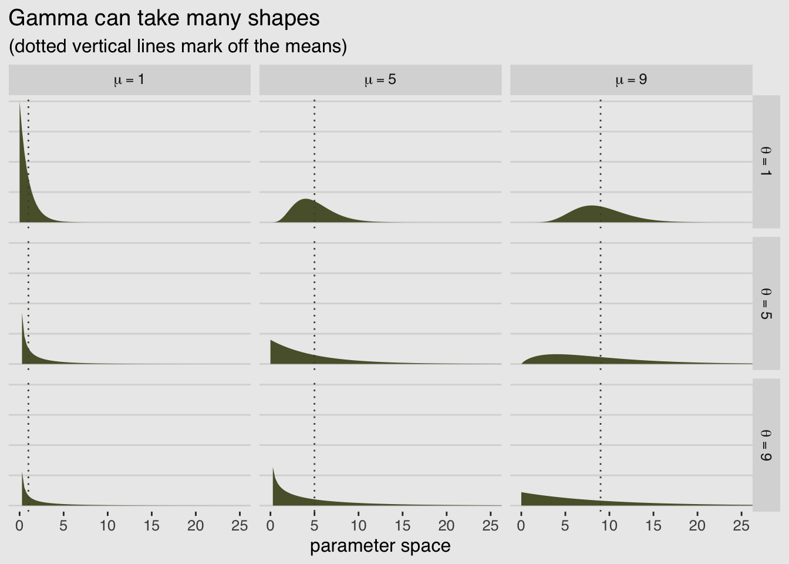
Compare priors on sigma
Did you know that if you take the log of a lognormal distribution, you end up with a normal distribution and viceversa? So you should remember: normal priors on log(sigma) are by definition log-normal priors on sigma. The same repeated again: normal prior on the log link is like a lognormal prior on the identity link.
Code
data.frame(sigma = c(exp(dist_normal(0,1)), # exp beacause brms does the log of sigma
exp(dist_student_t(3, 0, 1)),
dist_cauchy(location = 0, scale = 0.1),
dist_exponential(5)
)) |>
ggplot(aes(xdist = sigma, y = as.character(sigma))) +
stat_halfeye(p_limits = c(0, 0.975))+
theme_bw()+
scale_x_continuous(expression(italic(p)(sigma)), limits = c(0,10))+
labs(subtitle = "Notice that ...% of the density is > ~10",
y= NULL)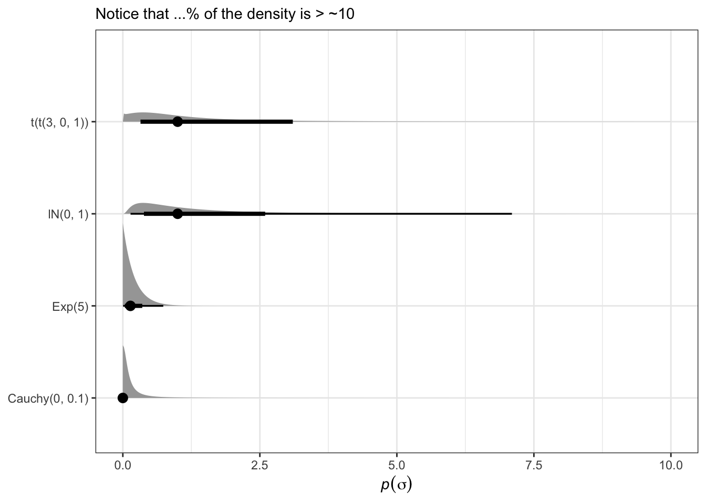
Code
# Intercept of the delta DOC. remember that in this model the Intercept is the delta DOC value when the pond water volume assume its average value.
n1 <- prior(normal(0, 5), class = sd) %>%
parse_dist()
(pn1 <- ggplot(n1, aes(y = 0, dist = .dist, args = .args)) +
stat_halfeye(point_interval = mean_qi, .width = .95,
p_limits = c(.0001, .9999)) +
scale_y_continuous(NULL, breaks = NULL) +
scale_x_continuous(breaks = seq(from = -15, to = 15, by = 2.5), limits = c(-15,15))+
theme_bw(base_size = 16)+
labs(title = "Intercept prior: Normal(0, 5)",
subtitle = "The point and horizontal line mark the mean and 95% interval.",
x = expression(italic(p)(beta[0]))))
# Slope beta_1.How much the pond water volume influence delta DOC.
n2 <- prior(normal(-0.2, 0.25), class = sd) %>%
parse_dist()
(pn2 <- ggplot(n2, aes(y = 0, dist = .dist, args = .args)) +
stat_halfeye(point_interval = mean_qi, .width = .95,
p_limits = c(.0001, .9999)) +
scale_y_continuous(NULL, breaks = NULL) +
scale_x_continuous(breaks = seq(from = -1, to = 1, by = 0.25), limits = c(-1,1))+
theme_bw(base_size = 16)+
labs(title = "Pond water volume prior: Normal(-0.2, 0.25)",
subtitle = "There is almost 20% of probability that the slope is > 0",
x = expression(italic(p)(beta[1])))
)
# What is the probability that beta_1 is > 0 ?
tibble(beta_1 = rnorm(n = 10000, mean = -0.2, sd = 0.25)) |>
count(beta_1 > 0) |>
mutate(percent = 100 * n / sum(n))
#### Student-t scale parameter #####
n3 <- prior(lognormal(0, 1), class = sd) %>%
parse_dist()
(pn3 <- ggplot(n3, aes(y = 0, dist = .dist, args = .args)) +
stat_halfeye(point_interval = mean_qi, .width = .95,
p_limits = c(.0001, .9999)) +
scale_y_continuous(NULL, breaks = NULL) +
theme_bw(base_size = 16)+
labs(title = "Student-t scale parameter prior: Normal(0, 1)",
x = expression(italic(p)(s)))
)
### Student-t nu parameter #####
n4 <- prior(gamma(2, 1)) %>%
parse_dist()
(pn4 <- ggplot(n4, aes(y = 0, dist = .dist, args = .args)) +
stat_halfeye(point_interval = mean_qi, .width = .95,
p_limits = c(.0001, .9999)) +
scale_y_continuous(NULL, breaks = NULL) +
scale_x_continuous(breaks = seq(from = 0, to = 9, by = 1.5), limits= c(0,9))+
theme_bw(base_size = 16)+
labs(title = "Student-t nu parameter prior: Gamma(2, 1)",
x = expression(italic(p)(s)))
)
#### merge the plots ####
ggpubr::ggarrange(pn1 , pn2, pn3 , pn4, nrow = 4)